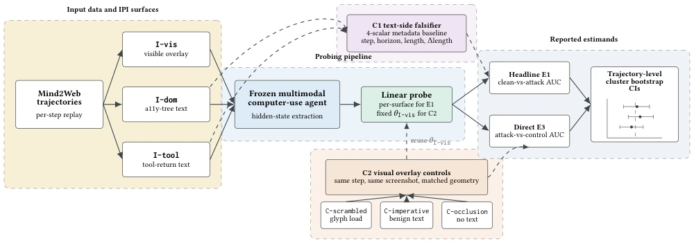
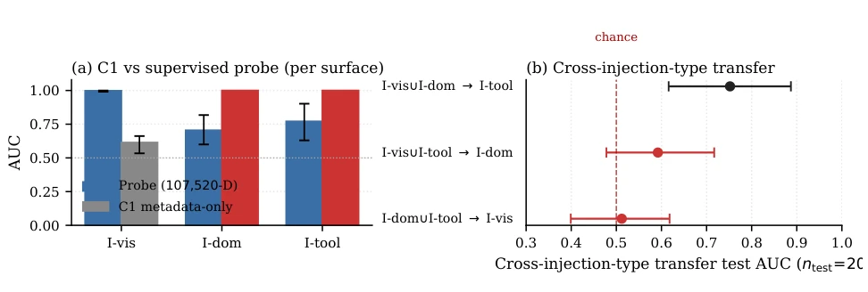
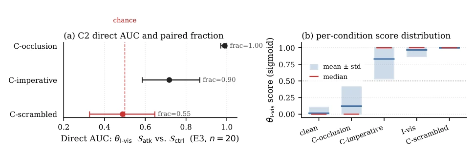

This paper pours cold water on evaluators who blindly worship AUC. Although Qwen2.5-VL-7B achieved a stunning AUC of 0.998 in Indirect Prompt Injection (IPI) detection on Mind2Web, the authors sharply point out this is not semantic detection, but "shortcut learning". The model may have merely memorized the position of ad banners or text length, rather than the malicious content itself. Although the methodological contribution is solid, limited by a single model and teacher-forced replay, generalizability is questionable. However, this "critical scrutiny" spirit is commendable in safety evaluation, reminding us that high metrics do not equal true safety, and probes' robustness must be verified through controlled variables, otherwise it is easy to fall into false prosperity.
Multimodal Agent safety evaluation is difficult due to heterogeneous inputs and susceptibility to IPI attacks [16]. Existing work often borrows probing techniques from LLM interpretability [2, 18], assuming high AUC represents internally encoded malicious intent. However, Shortcut Learning literature [14] has long warned about surface artifact issues in control tasks. Existing IPI benchmarks [9] mostly focus on action success rates, ignoring whether the hidden state truly understands "malice". This paper aims to address this evaluation loophole, preventing surface statistical features from being misread as semantic safety, ensuring probes truly detect content rather than constructed artifacts, which is crucial for building trustworthy embodied intelligence and avoiding safety evaluation becoming merely formalistic.
The overall process is: freeze VLM to extract hidden states, train a linear probe. The core innovation lies in the "candidate control set". C1 is a 4-scalar metadata baseline on the text side (steps, length, etc.), used to detect if distinction can be made relying solely on metadata. C2 is visual-side interference-matched control, including garbled text, benign instructions, and occlusion, keeping geometric positions consistent while changing content only. Evaluation metrics are divided into E1 (clean vs attack) and E3 (attack vs control). By comparing probe performance with baseline/control, judge whether AUC is semantically driven. If C1 is saturated or C2 discrimination is low, then AUC is invalid. Additionally, trajectory-level Bootstrap confidence intervals are introduced to handle data dependency. The probe extracts 6-layer hidden states in a frozen state, feature dimension up to 100,000, ensuring capture of fine-grained information.

Figure 1: Overview of the 2-control diagnostic recipe for clean-vs-attack hidden-state probing of a frozen multimodal computer- use agent. Per-step Mind2Web trajectories and three IPI surfaces (visible-overlay I-vis, a11y-tree I-dom, tool-return I-tool) feed the linear probe block; C1 reports a 4-scalar metadata baseline on text-side surfaces, C2 reports direct E3 AUC against same-step nuisance-matched controls (C-scrambled / C-imperative / C-occlusion); CIs from trajectory-level cluster bootstrap. Probe identity: Table 1 headline AUCs use a per-surface probe (one trained probe per row); only the C2 visually-matched controls reuse the I-vis-trained probe 𝜃I-vis without retraining (Tab. 9, App.).
Using Qwen2.5-VL-7B and Mind2Web dataset, 80 trajectories. Results show: text-side probe completely suppressed by C1 metadata baseline (AUC 1.0), proving it is constructed artifacts; visual-side probe although AUC 0.998, when compared with garbled text control AUC drops to 0.489 (random level), indicating detection of OCR density rather than semantics. Only benign instruction control shows partial semantic discrimination ability. Robustness checks excluded overfitting and hyperparameter selection bias. This indicates 0.998 AUC is misleading without controls, must combine control set to draw conclusions. Experiments also found cross-injection type transfer effect is poor, further supporting surface feature dominance.

Figure 2: Text-side C1 evidence and cross-injection transfer. (a) C1 metadata-only AUC (a 4-scalar logistic on step_idx, hori- zon, prompt_length, Δprompt-length) vs. the supervised 107,520-D probe AUC, per surface. Red bars indicate the C1 paired- construction-falsifier criterion is triggered (C1 AUC ≥probe AUC): the metadata-only baseline matches or exceeds the probe on I-dom / I-tool, so those surfaces’ clean-vs-attack splits are paired-construction artefacts rather than evidence of internal IPI semantics. (b) Cross-injection-type transfer: training on the union of two surfaces and testing on the held-out third. The text-only →I-vis CI contains 0.5, so the data do not provide evidence for a shared cross-surface malicious-instruction representation in this setup. CIs from 1,000-replicate

Figure 3: Visible-side C2 diagnostic, visualising Tab. 3. (a) Direct E3 AUC (𝜃I-vis scoring Satk vs. same-step Sctrl, 20+20 rows) with 95% trajectory-bootstrap CI; paired E3′ “Frac. I-vis > ctrl” annotated. The C-scrambled CI is rendered red because it contains 0.5 – the load-bearing discovery-stage flag. (b) Per-condition probe-score distribution (mean ± std band, median tick): I-vis and C-scrambled both saturate near 1.0, so the direct I-vis-vs-C-scrambled AUC of 0.489 in (a) reflects nearly identical score distributions at the top of the unit interval, not a failure of trajectory-level matching. Saturation caveat: AUCs are computed from predict_proba second-column scores; we re-score the paired same-step contrast with raw decision-function logits and recover the same ordering (0.487 / 0